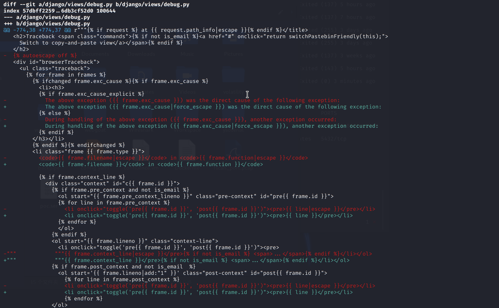
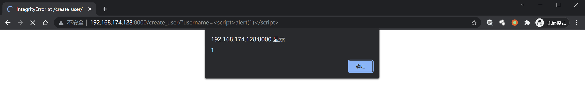
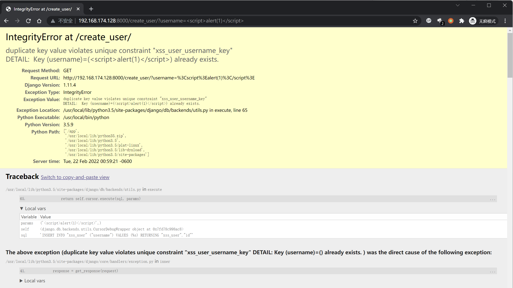

Django debug page XSS 漏洞 CVE-2017-12794¶
漏洞描述¶
Django 发布了新版本 1.11.5，修复了 500 页面中可能存在的一个 XSS 漏洞，这篇文章说明一下该漏洞的原理和复现。
补丁分析¶
因为官方说明是 500 页面中出现的 BUG，所以我们重点关注的就是 django/views/debug.py。
Github 上有 Django 的仓库，下载下来，用 1.11.4 和 1.11.5 进行比较：
git clone https://github.com/django/django.git
cd django
git diff 1.11.4 1.11.5 django/views/debug.py

The above exception ({{ frame.exc_cause }}) was the direct cause of the following exception:
-------------------------------------
The above exception ({{ frame.exc_cause|force_escape }}) was the direct cause of the following exception:
可见，外部关闭了全局转义，然后在这两个地方增加了强制转义。那么，漏洞肯定是在这个位置触发的。
功能点分析¶
如果要触发这两个输出点，就必须进入这个 if 语句：{% ifchanged frame.exc_cause %}{% if frame.exc_cause %}。
可以做个简单的测试，在 Django 命令行下，我们创建一个 username 为 phith0n 的用户，然后再次创建一个 username 为 phith0n 的用户，则会抛出一个 IntegrityError 异常。

见上图，原因是触发了数据库的 Unique 异常。
为什么 Django 会引入这样一个异常机制？这是为了方便开发者进行 SQL 错误的调试，因为 Django 的模型最终是操作数据库，数据库中具体出现什么错误，是 Django 无法 100% 预测的。那么，为了方便开发者快速找到是哪个操作触发了数据库异常，就需要将这两个异常回溯栈关联到一块。
我们可以看看代码，django/db/utils.py 的 __exit__ 函数：
def __exit__(self, exc_type, exc_value, traceback):
if exc_type is None:
return
for dj_exc_type in (
DataError,
OperationalError,
IntegrityError,
InternalError,
ProgrammingError,
NotSupportedError,
DatabaseError,
InterfaceError,
Error,
):
db_exc_type = getattr(self.wrapper.Database, dj_exc_type.__name__)
if issubclass(exc_type, db_exc_type):
dj_exc_value = dj_exc_type(*exc_value.args)
dj_exc_value.__cause__ = exc_value
if not hasattr(exc_value, '__traceback__'):
exc_value.__traceback__ = traceback
# Only set the 'errors_occurred' flag for errors that may make
# the connection unusable.
if dj_exc_type not in (DataError, IntegrityError):
self.wrapper.errors_occurred = True
six.reraise(dj_exc_type, dj_exc_value, traceback)
其中 exc_type 是异常，如果其类型是 DataError,OperationalError,IntegrityError,InternalError,ProgrammingError,NotSupportedError,DatabaseError,InterfaceError,Error 之一，则抛出一个同类型的新异常，并设置其 __cause__ 和 __traceback__ 为此时上下文的 exc_value 和 traceback。
exc_value 是上一个异常的说明，traceback 是上一个异常的回溯栈。这个函数其实就是关联了上一个异常和当前的新异常。
最后，在 500 页面中，__cause__ 被输出。
环境搭建¶
Vulhub 编译及启动环境：
/docker-compose up -d
漏洞复现¶
在使用 Postgres 数据库并触发异常的时候，psycopg2 会将字段名和字段值全部抛出。那么，如果字段值中包含我们可控的字符串，这个字符串其实就会被设置成 __cause__，最后被显示在页面中。
所以我们假设有如下场景：
- 用户注册页面，未检查用户名
- 注册一个用户名为
<script>alert(1)</script>的用户 - 再次注册一个用户名为
<script>alert(1)</script>的用户 - 触发 duplicate key 异常，导致 XSS 漏洞
访问 http://your-ip:8000/create_user/?username=<script>alert(1)</script> 创建一个用户，成功；再次访问 http://your-ip:8000/create_user/?username=<script>alert(1)</script>，触发异常：


可见，Postgres 抛出的异常为
duplicate key value violates unique constraint "xss_user_username_key"
DETAIL: Key (username)=(<script>alert(1)</script>) already exists.
这个异常被拼接进 The above exception ({{ frame.exc_cause }}) was the direct cause of the following exception，最后触发 XSS。